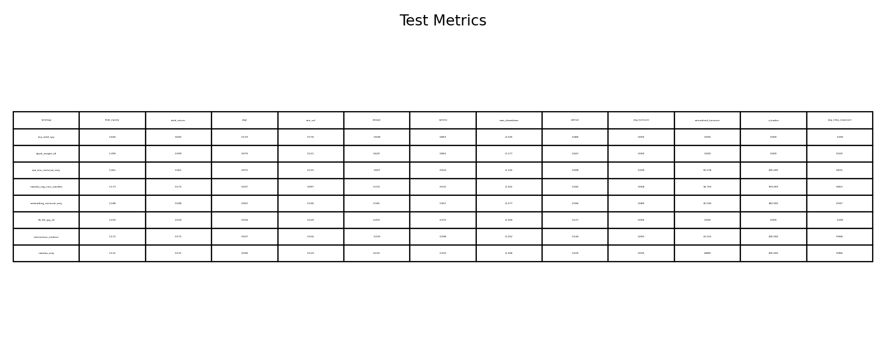
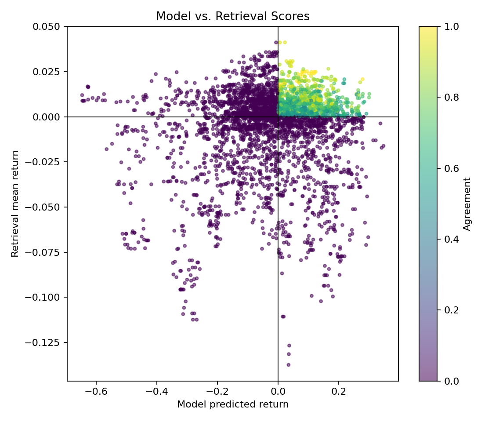
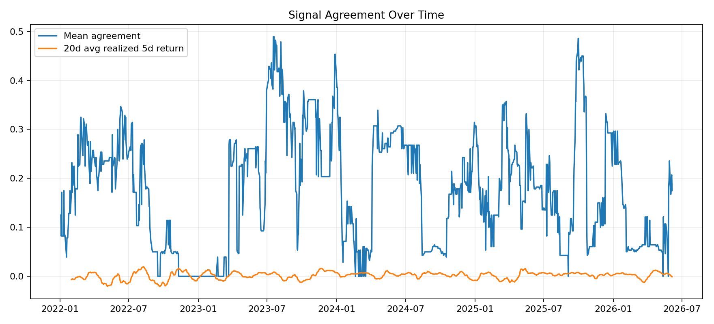
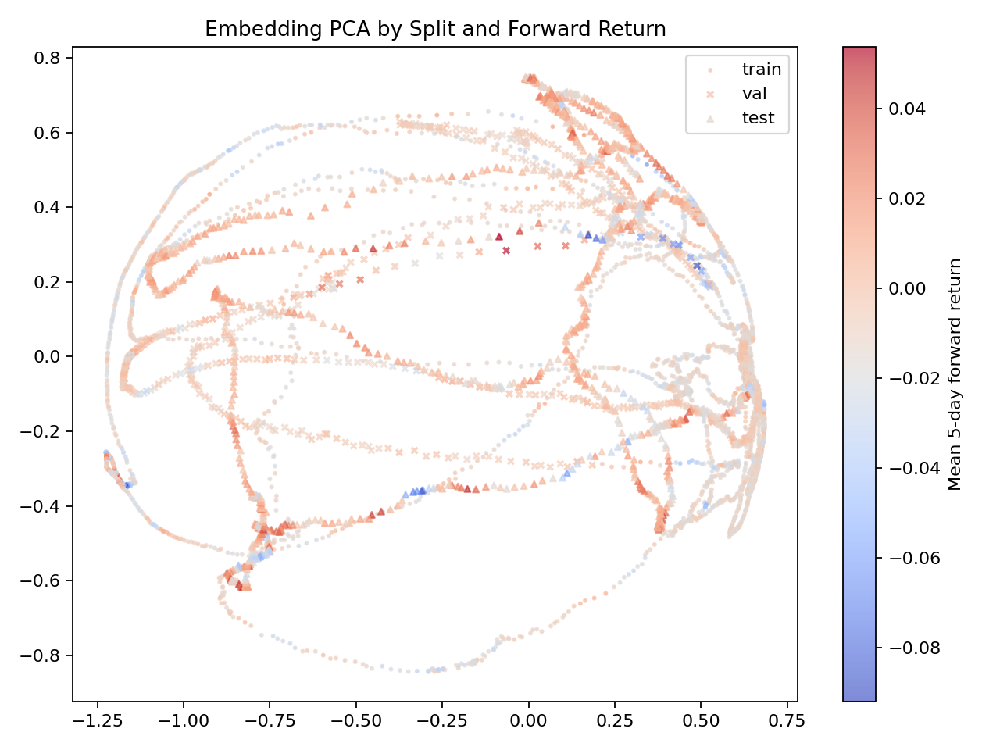
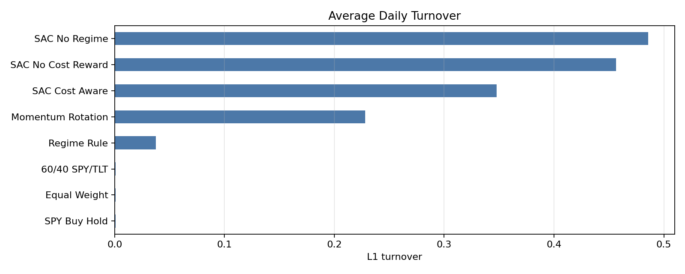
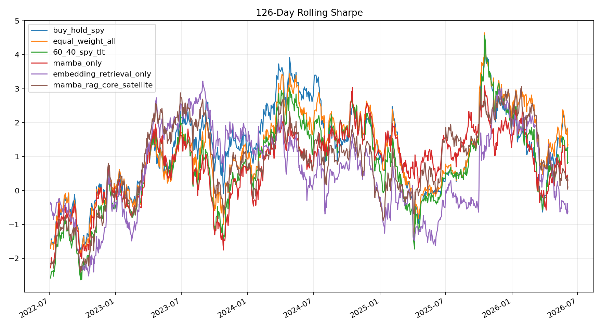

Financial forecasting is weak. The question is whether a trade can be justified.
The original Market-Memory RAG compared a 60-day SPY pattern to raw historical windows. It reduced risk by abstaining, but it almost disappeared from the market and missed the upside. The upgraded version asks a more mature question: can a neural forecast be supported by similar learned market states?
Raw windows are not regimes
A short price window may look similar while macro context, cross-asset behavior, and risk conditions differ.
Learn the state first
A temporal encoder observes 120-day multi-asset features and maps the market into an embedding before retrieval.
Avoid all-or-nothing trading
A core-satellite rule keeps baseline exposure while using AI signals only as tactical tilts.
Why use a Mamba-style encoder and retrieval memory?
The neural network is not added only to look fancy. It has a specific role: compress long, multivariate market history into a state vector where retrieval can compare regimes rather than raw prices.
Long sequence memory
Mamba-style selective state-space models are designed for efficient sequence modeling with input-dependent propagation and forgetting. That matches the project need: keep relevant trend/risk context and ignore stale noise.
Efficient multivariate baseline
When official Mamba kernels are unavailable, a TSMixer-style PyTorch encoder is a defensible fallback because it explicitly mixes information across time and features for multivariate forecasting.
Historical analogue audit
Retrieval-augmented time-series work argues that historical pattern retrieval can provide inductive bias and complement a learned model. Here, retrieval checks whether similar past embeddings support the forecast.
A five-stage pipeline: sequence, forecast, retrieve, agree, allocate.
(ŷt, zt) = fθ(Xt-119:t)
Market memory retrieval
Nk(t) = TopKi∈past sim(zt, zi)
Core-satellite allocation
wt = (1 - ρ) wcore + ρ wsatellite,t
The core prevents the old RAG problem of vanishing into cash; the satellite gives the learned model room to act.
Broad ETF universe, chronological split, transaction-cost backtest.
The final system moves beyond a single SPY window. It uses broad daily ETF data and evaluates only on the final chronological test split.
Universe
SPY, QQQ, IWM, TLT, IEF, SHY, GLD, XLK, XLF, XLE, XLU, XLV, XLY, XLP.
Prediction target
Five-trading-day forward ETF log returns, used both for neural forecasts and retrieval outcome summaries.
Leakage control
Scaler, encoder training, and retrieval memory are fitted on past splits only; test rows retrieve only past market states.
Good story, modest alpha: the model helps, but passive baselines still win.
The proposed strategy is not presented as a market-beating system. Its strongest evidence is component-level: it improves over Mamba-only, reduces turnover versus retrieval-only variants, and provides an auditable decision trail.
The test period rewarded market exposure.
Better than Mamba-only, but not better than passive ETF baselines.
Lower than raw KNN and embedding retrieval-only strategies.
| Strategy | Final | Total Ret. | CAGR | Vol. | Sharpe | Max DD | Ann. Turnover | Trades | Exposure |
|---|---|---|---|---|---|---|---|---|---|
| buy_hold_spy | 1.640 | 0.640 | 0.119 | 0.176 | 0.638 | -0.243 | 0.000 | 0 | 1.000 |
| equal_weight_all | 1.399 | 0.399 | 0.079 | 0.121 | 0.629 | -0.177 | 0.000 | 0 | 0.929 |
| raw_knn_retrieval_only | 1.361 | 0.361 | 0.072 | 0.115 | 0.607 | -0.143 | 50.378 | 206 | 0.815 |
| mamba_rag_core_satellite | 1.173 | 0.173 | 0.037 | 0.097 | 0.374 | -0.202 | 14.703 | 159 | 0.863 |
| embedding_retrieval_only | 1.208 | 0.208 | 0.043 | 0.146 | 0.345 | -0.277 | 22.545 | 583 | 0.947 |
| 60_40_spy_tlt | 1.159 | 0.159 | 0.034 | 0.129 | 0.259 | -0.269 | 0.000 | 0 | 1.000 |
| momentum_rotation | 1.172 | 0.172 | 0.037 | 0.156 | 0.230 | -0.252 | 23.161 | 206 | 0.998 |
| mamba_only | 1.131 | 0.131 | 0.028 | 0.129 | 0.216 | -0.268 | 8.889 | 206 | 0.984 |

The value of the method is auditability: we can inspect agreement, memory, and allocation.







The current evidence is enough for a coherent project, but not enough for a strong alpha claim.
The honest conclusion is that Mamba-RAG is a useful auditable allocation framework, not a proven trading edge. The next experiments below would make the evidence much stronger if time remains.
Seed robustness
Run 3-5 seeds and report mean/std for Mamba-only, embedding retrieval-only, and Mamba-RAG core-satellite.
Lookback ablation
Compare 60, 120, and 252-day windows to directly answer whether 60 days was too short.
Component ablation
Compare no retrieval, raw KNN retrieval, learned embedding retrieval, and core-satellite allocation under the same cost model.
Why this structure is technically defensible.
- Mamba. Gu and Dao, Mamba: Linear-Time Sequence Modeling with Selective State Spaces, 2023.
- TSMixer. Chen et al., TSMixer: An All-MLP Architecture for Time Series Forecasting, 2023.
- Retrieval-augmented forecasting. Han et al., Retrieval Augmented Time Series Forecasting, 2025.